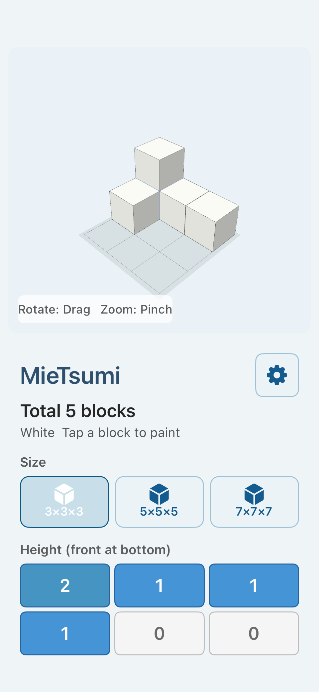

Build a model
Tap a cell under “Height (front at bottom)” to set the height of that vertical stack. Each tap moves from zero through the maximum height for the selected size.
3×3×3 is available in the Free Version. The Full Version adds 5×5×5 and 7×7×7. Turn on “Show Count” to display the total number of blocks.

Move around the model
Drag the 3D view to rotate freely. Pinch to zoom in or out.
Under “View,” select Angle, Front, Left, Right, Back, or Top. Free rotation helps you explore, while the presets make it easy to compare the model from consistent directions.
Select “Reset View” to return to the initial angled position.
Inspect hidden areas
Under “Display,” choose Normal, See-through, or Wire. See-through makes the faces translucent, while Wire emphasizes the outlines.
When one block hides another, rotate the model first, then use a different display mode to examine the overlap from the original angle.


Use color to mark or create
Select a color under “Color,” then tap a block in the 3D view to paint it.
Color can mark a hidden block, help you follow the same block between viewpoints, organize parts of a model, or become part of a free-form creation.
The Free Version includes White, Red, Blue, Yellow, and Green. The Full Version adds Black, Gray, Purple, Cyan, Pink, and Orange. “Reset Colors” returns all blocks to white without changing the arrangement.
Show the count, Antenna, or light
“Show Count” displays the total number of blocks in the current model.
“Antenna” displays one line for each block in a vertical stack. See Learning with MieTsumi for a counting example.
In the Full Version, turn on “Light” to hold the viewpoint while you drag the light source or pinch to change its distance. “Reset Light” returns it to the initial position.
Save or start again
In the Full Version, select “Photo” to save a clean image of the 3D creation to the device’s photo library. If the app requests permission to add photos, allow it to continue.
“Clear All” removes every placed block and its color after a confirmation.
An image is saved only when you select Photo. It is not sent to the developer or an external server.